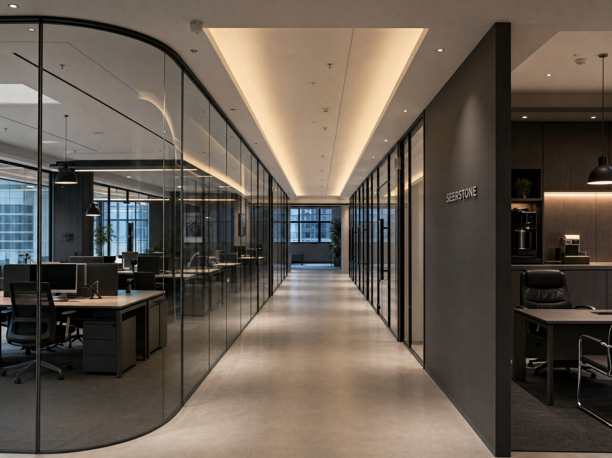

We started as operators, not consultants. The group was founded by people who had built and shipped consumer products before — and were tired of seeing good brands stall because their growth, supply, and ops lived in seven different relationships.
So we built one. A single team running creative through to delivery, with AI used wherever it could move work faster, more cheaply, or more accurately than the previous way. Not as a marketing line; as how the work actually happens.
We own the brands we run. We hire operators who like the whole engine. We invest in systems that would be hard to rent. And we move with the quiet pace of a group that doesn't need to prove anything to investors — just to the people buying the products.
Three ideas the group is built on.
If we don't control it, we can't really improve it. Brand, supply, marketing, fulfillment — under one roof, accountable to one P&L.
AI sits underneath the workflow, not on top of it as a feature. About 80% of our day-to-day work touches a system we built.
Growth is the by-product of a tight operating cadence, not the goal. We compound the operation; the numbers follow.